22 canonical road segments; 21 merged painted surfaces in one connected network. Zero fixed obstruction hits in 8,382 street-interior samples (player radius 11). Moving traffic retains collision.
Ordinary movement input passed both northern connections and the Maple bypass. Desktop and mobile-size captures had no browser exceptions. Seeded Zombie maps matched, startup passed, and the connected world stayed unavailable during Zombie mode.
Open local road review · Collision audit · Movement results · Mode isolation · Protected source hashes
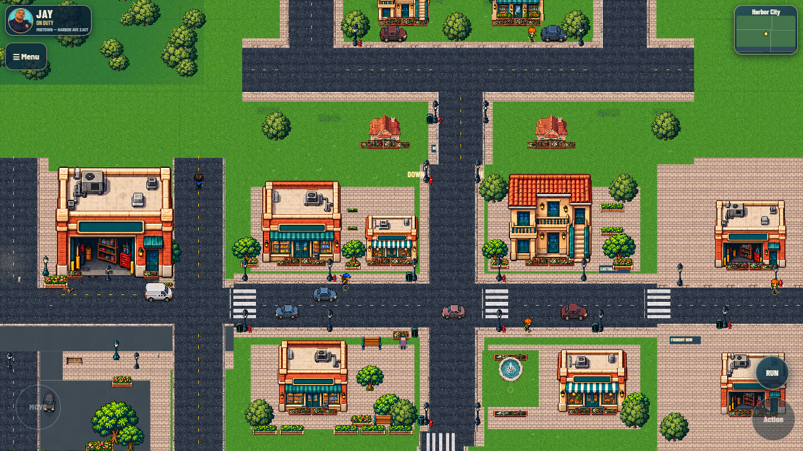
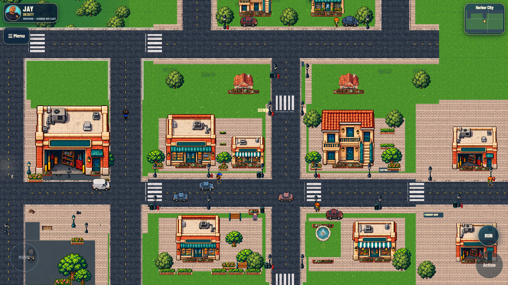
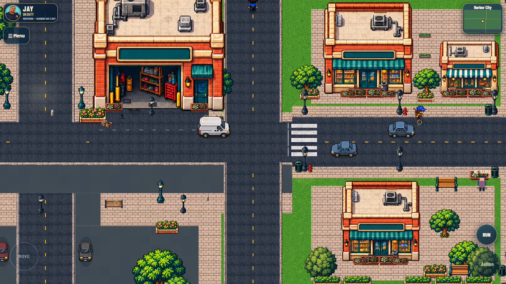
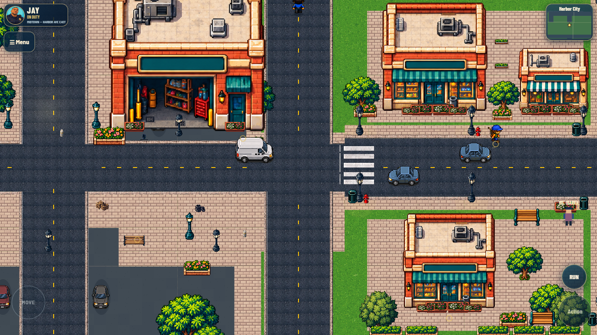
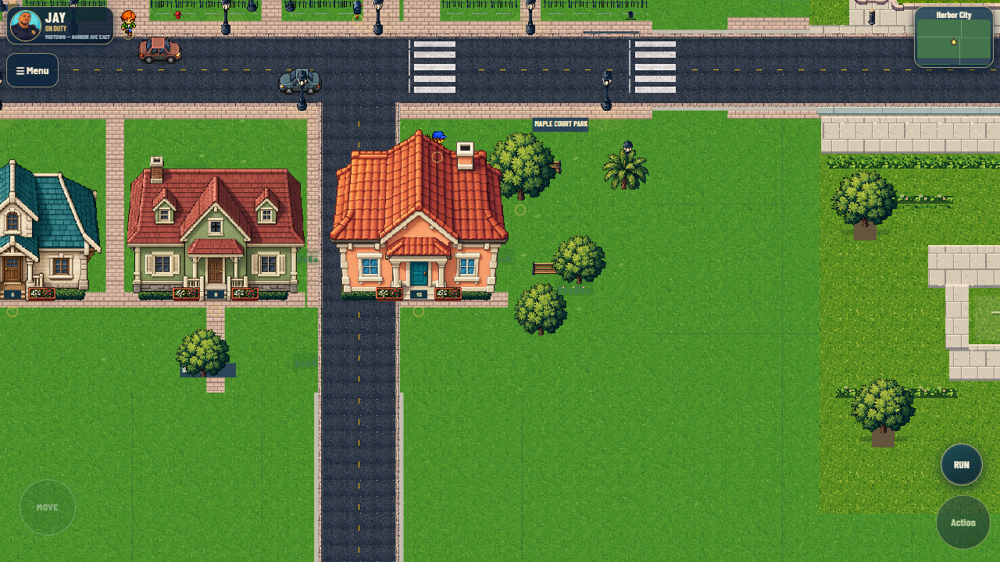
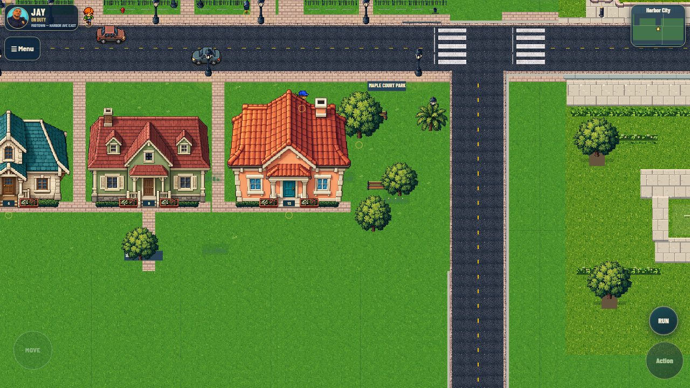
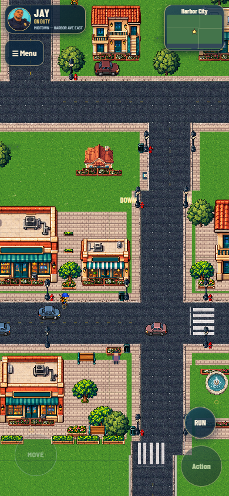
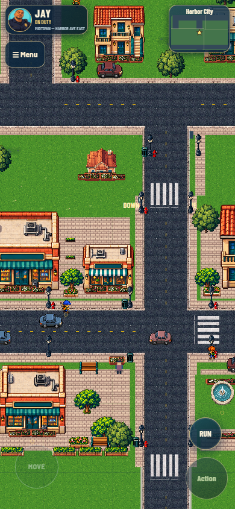
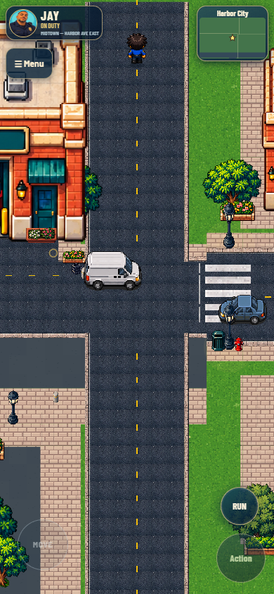
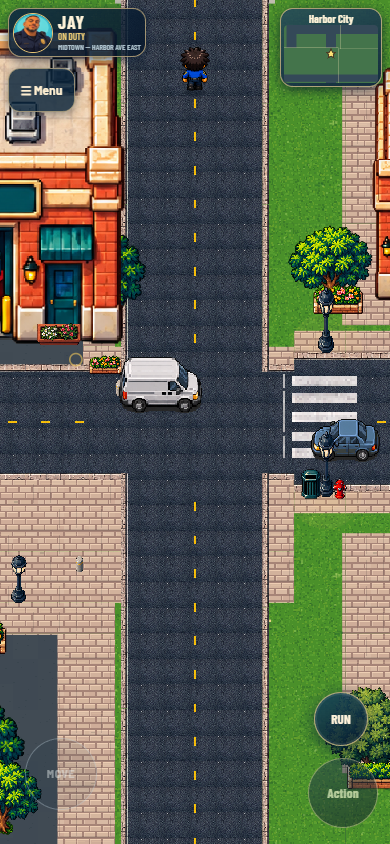
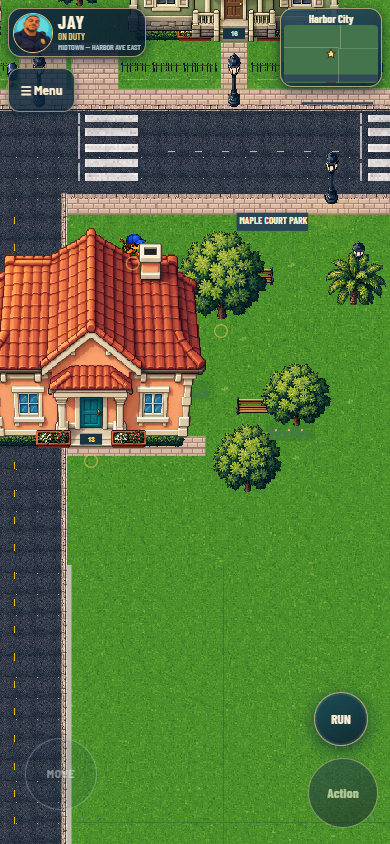
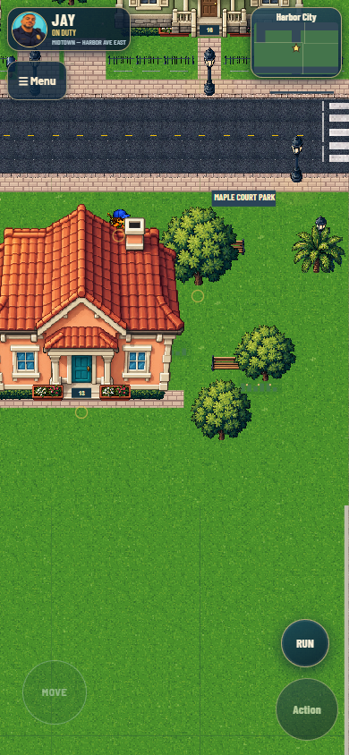